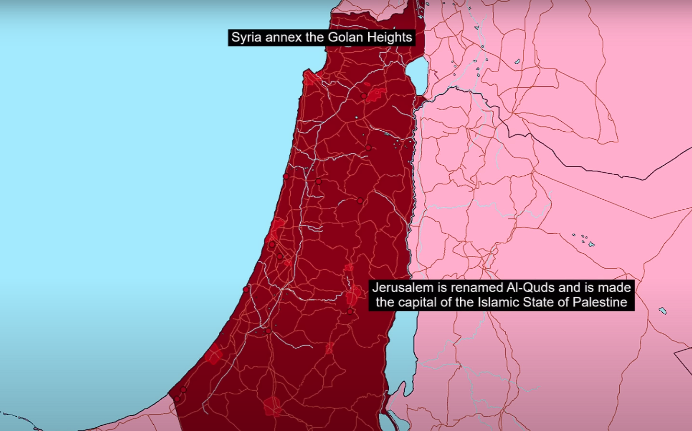

Hamas 1988 Charter
The Hamas 1988 is the plan of Hamas and its purpose. The plan was to defeat Zionists with Jihad (Inshallah), and
establish an Islamic state of Palestine with its historic borders. The city of Jerusalem would be name "Al Quds"
and become the capital of the Palestinian state. The government and military would be all controlled by Hamas
The Golan Heights would be given back to Syria and then annexed by Syria. This would make the Tabariyeh Lake governed
by both Syria and Palestine.
